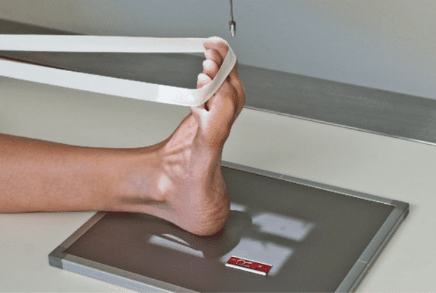
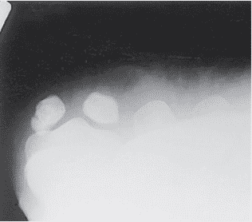

SESAMÓIDES - AXIAL / TANGENCIAL
Paciente
Sentado ou em D.D., Joelho estendido, pé em eqüino base do calcâneo faz 60º com a mesa, dedos em dorsiflexão região dos sesamóides centralizado sobre o chassi.
Chassis / Filme
18×24 – Transversalmente
Raio central
⊥ orientado para a cabeça dos metatarsos
DFF
1,00 m – sem bucky.


Observação: O R.C. poderá sofrer uma angulação de até 10º no sentido cranial. A incidência poderá ser realizada em PA.